Scientific Classification
| Kingdom | Animalia | Animalia | Animalia |
|---|---|---|---|
| Phylum | Chordata | Animalia | Animalia |
| Clade | Archosauria | Animalia | Animalia |
| Clade | Avemetatarsalia | Animalia | Animalia |
| Clade | Dinosauria | Animalia | Animalia |
| Clade | Saurischia | Animalia | Animalia |
| Clade | Theropoda | Animalia | Animalia |
| Clade | Coelurosauria | Animalia | Animalia |
| Clade | Megaraptora | Animalia | Animalia |
Taxonomic note: This classification uses the conventional Earth classification of Megaraptora as a starting point. It does not account for an endemic braches of the clade the evolved on Kaimere, nor encompasses every megaraptoran-like animal on Kaimere despite not belonging in the clade.
01 · INTRODUCTION
Overview
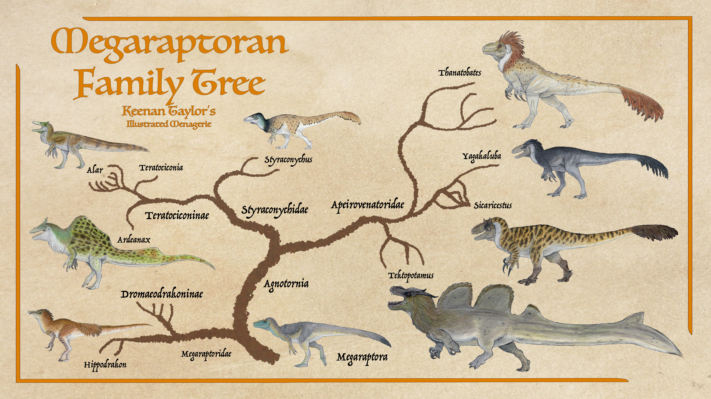
Megaraptorans are a lineage of theropods with a debated ancestry. Though once believed to be carnosaurs, more recent published evidence suggests a coelurosaur placement, within or having a close affiliation to tyrannosauroids. But due to the patch fossil record on both Earth and Kaimere, much about the phylogeny is speculative. All members of the clade seem to have were large forelimbs that are strongly built. Their first two fingers are elongated, with massive curved claws, while the third digit is rather small.
Like all non-avian lineages, they are extinct on Earth. But like many dinosaur clades and families, megaraptorans remain very much extant on Kaimere. While on Earth, only the Megaraptoridae family is the defining group within this clade, but across Kaimere they occupy a wide range of predatory niches. The repeated introduction of related but distinct theropod lineages through the Portal has further complicated efforts to reconstruct their evolutionary history.
On Kaimere, megaraptorans underwent two principal evolutionary radiations. The first comprises descendants of comparatively basal megaraptorans that arrived during the Mesozoic harvests and subsequently diversified into an endemic radiation known as Agnostornia, or the wondrous birds. This clade contains two principal families: Styraconychidae or "slender barons," and the Apeirovenatoridae or "robust monarchs." The second radiation descends from more derived members of Megaraptoridae, introduced during a later series of harvests in the Cretaceous. Although these lineages share a common ancestry, they differ considerably in their anatomy, predatory behavior, social organization, and evolutionary histories.
Today, megaraptorans are among the most ecologically significant terrestrial predators on Kaimere. Their descendants range from relatively small, adaptable generalists to enormous terrestrial apex predators and specialized aquatic hunters. Several lineages have also evolved complex social structures, prolonged parental care, and highly specialized methods of capturing and killing prey. Their present diversity is the product of successive introductions, climatic upheavals, competitive displacement, and repeated opportunities for radiation following major extinction events.
02 · DEEP TIME
Evolutionary History
Origins and Early Diversification
Megaraptorans are a lineage of theropod dinosaurs whose evolutionary relationships remain controversial. They were traditionally classified among the carnosaurs, but more recent published evidence has favored a placement within Coelurosauria, potentially within or closely affiliated with Tyrannosauroidea. The fossil record of both Earth and Kaimere remains incomplete, however, and much of their evolutionary history is still speculative.
The earliest known megaraptorans and their presumed relatives are primarily associated with Laurasia. This distribution, alongside the introduction of basal oviraptorosaurs, therizinosaurs, and ornithomimosaurs throughout Kaimere's tropical regions, lends support to the hypothesis that several of these lineages arrived during a Laurasian Harvest during the third Mesozoic Dynasty. Future discoveries may reveal additional Gondwanan relatives and clarify the group's early evolutionary relationships.
On Kaimere, two distinct megaraptoran lineages eventually became established. One represents a more derived radiation related to the Earth-derived Megaraptoridae, while the other descends from more basal megaraptorans and evolved independently on Kaimere. Both are believed to have arrived during the third Mesozoic Dynasty, although their exact arrival dates and relationships to particular Harvests remain uncertain.
The majority of Kaimere's native megaraptorans are believed to descend from relatively basal members of the group, possibly comparable to Fukuiraptor. Some researchers question whether these animals belong within Megaraptora proper, suggesting instead that they may represent a sister lineage or another branch of basal tyrannosauroids. Nevertheless, most current studies place them within Megaraptora.
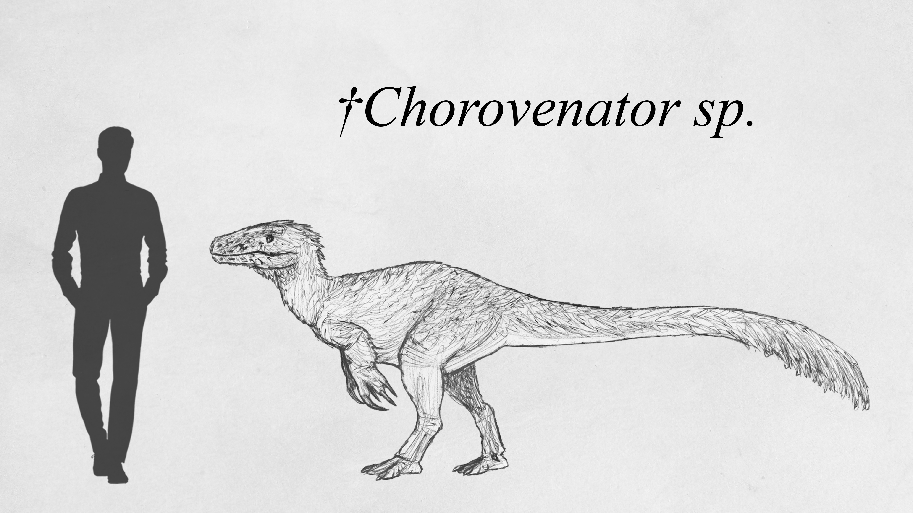
These early megaraptorans first appear in the fossil record between approximately 110 and 85 million years ago, during the period known in Kaimere as Jelralanajag, or the Age of Tremor and Travel.
They were relatively small, fast, and agile predators. Their prey was often diminutive, requiring exceptional reflexes and precision when hunting. At the same time, they frequently shared their weight class with young cardinals, which were considerably more powerful pound for pound. These circumstances placed considerable selective pressure on their sensory capabilities, reflexes, and weaponry.
Early megaraptorans therefore occupied a difficult ecological position. They were large enough that concealment and escape were not always reliable, yet small enough that they could not confidently rest without remaining alert to potential threats. Their combination of agility, keen senses, and formidable forelimb weaponry would later prove advantageous when their descendants began occupying larger predatory niches.
Throughout the Mesozoic Dynasties, however, these animals remained relatively small generalists. Their success was overshadowed by other theropods, including abelisaurids, noasaurids, and the first representatives of the more derived Megaraptoridae.
The Red Spring Dynasty
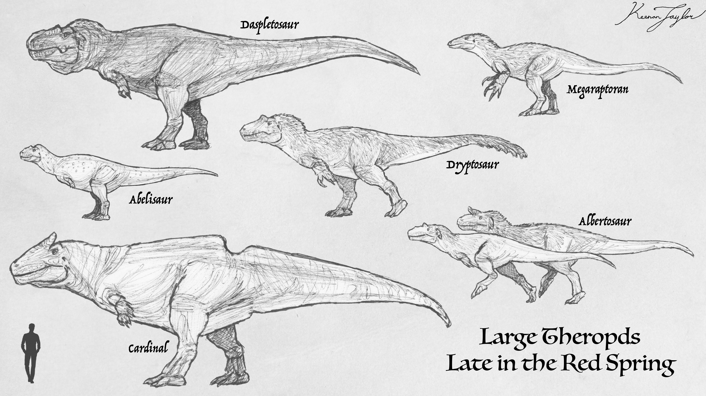
The period between approximately 85 and 70 million years ago, known as the Red Spring Dynasty, was marked by considerable ecological instability. Numerous Harvests occurred during the Campanian, although the precise geographic regions involved remain uncertain. North America appears to have been a major focus, but the fossil record also suggests that Gondwana was involved at some point.
These Harvests introduced more derived members of the Megaraptoridae to Kaimere. On Earth, many of these animals had occupied apex-predator niches in Gondwana. In Kaimere, however, they entered ecosystems already dominated by larger cardinal carcharodontosaurs.
The introduced megaraptorids consequently became mesopredators or subordinate apex predators rather than the dominant terrestrial hunters. Their ecological position placed them among a diverse assemblage of large theropods that included tyrannosaurs, abelisaurids, and numerous smaller dromaeosaurs.
During the later stages of the Red Spring Dynasty, carcharodontosaurs consistently occupied the largest predatory niches. Megaraptorans, tyrannosaurs, and abelisaurids served as subordinate predators, while dromaeosaurs and juvenile megatheropods occupied the ecological fringes.
It remains difficult to determine whether this arrangement reflected stable ecological relationships among native lineages or repeated turnover caused by successive Harvests. The Known World provides examples of similar ecological succession during the last fifteen million years, but the Mesozoic fossil record is insufficient to establish whether the same process was occurring during the Red Spring Dynasty.
The Tyrant Dynasty

Around 68 million years ago, Kaimere experienced a rapid shift toward increasingly arid conditions. The cause remains uncertain, although several factors have been proposed, including continental drift affecting wind and ocean currents, volcanic activity, and a possible reduction in planetary axial tilt. These changes may have intensified climatic extremes, making warm regions hotter while increasing cold in higher latitudes. An extraterrestrial impact has also been proposed, but the hypothesis remains controversial. The suggestion emerged partly in the wake of similar proposals concerning Earth's own geological history, and evidence beyond certain core samples remains inconclusive. Volcanism provides an alternative explanation for much of the available evidence.
The resulting environmental disruption caused substantial losses of biomass and biodiversity, triggering another Harvest. As far as the current fossil record indicates, this was a single introduction from late Maastrichtian Asia. Many of the introduced animals were already adapted to arid environments. They consequently thrived during the rapid repopulation of Kaimere, establishing the foundations of the longest and most stable ecological dynasty in its history: the Tyrant Dynasty.
Although the climate eventually recovered, the newcomers had already become established across much of the Known World. Ni'Khar and western Kairul were particularly affected, with introduced animals constituting the majority of megafauna in many regions. Native lineages survived in some capacity, but the ecological balance had changed considerably.
The introduced megaraptorids on both lineages remained among the consistent subordinate apex predators of the Tyrant Dynasty. Their position beneath larger predators persisted throughout much of this period, but their relatively small size and generalized ecology would eventually prove advantageous.
The Dynastic Extinction and the Rise of Agnostornia
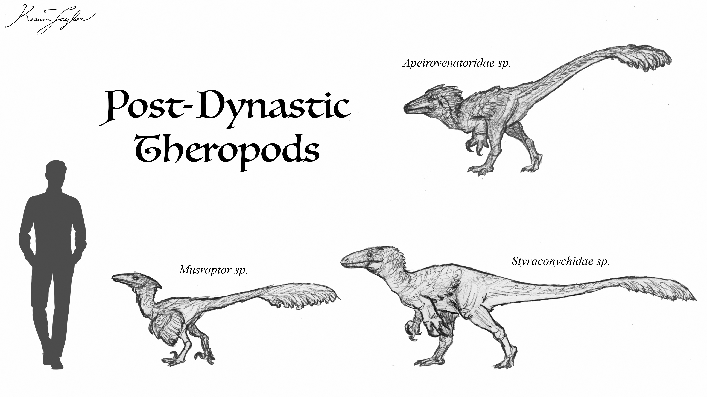
The Tyrant Dynasty concluded approximately fifteen million years ago, following massive volcanic activity that eliminated much of Kaimere's large megafauna. This widespread loss of biodiversity initiated a major ecological reorganization.
With many of the dominant predators gone, megaraptorans found themselves in an unprecedented position. The extinction of larger competitors allowed them to expand into ecological niches that had previously been inaccessible. The current consensus recognizes two distinct megaraptoran radiations in Kaimere. The first consists of lineages more closely related to Earth-derived Megaraptoridae. The second is a separate radiation descended from the more basal megaraptorans introduced during the earlier Mesozoic Harvests.
This latter group is known as Agnostornia, or the wonderous birds. It includes two major families: Styraconychidae and Apeirovenatoridae. Although both families descend from a common ancestral radiation in Arvel, they evolved markedly different body plans and predatory strategies. Styraconychids became the slender barons of the megaraptoran world, while apeirovenatorids evolved into the robust monarchs.
Both groups developed an unusual reproductive strategy involving extended parental care and multigenerational social structures. Mothers often tolerate offspring from previous generations within their territories until these individuals become sufficiently large to compete with them. At that point, the older offspring may be driven away or disperse voluntarily. These social groups resemble extended family associations. Older siblings and offspring from previous generations may assist in defending nests, killing nest raiders, and protecting younger individuals. Younger siblings may instinctively attack potential threats to their mother's clutches, even when those threats are small enough to be handled without assistance. This behavior is particularly pronounced among apeirovenatorids, whose offspring generally remain with their mothers for longer periods. Styraconychids tend to disperse earlier, often within their first few years of life.
The combination of extended parental care, social defense, and cooperative behavior is believed to have contributed substantially to the success of Agnostornia. These traits allowed them to become the dominant terrestrial predators of the Known World following the Dynastic Extinction.
The Rise and Fall of the Styrachonychids
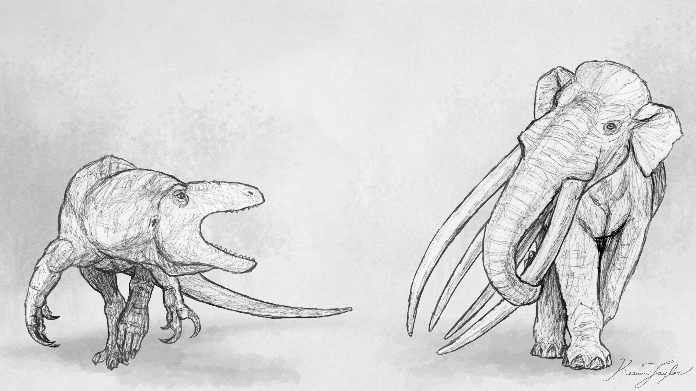
The three million years following the Dynastic Extinction were characterized by considerable ecological instability. Known as the Warring Clades Period, this interval saw numerous groups of animals compete for control of the Known World. Repeated harvests introduced additional organisms into ecosystems already struggling to recover, sometimes creating further disruptions rather than stabilizing them.
By 13 million years, large styraconychid megaraptors began emerging in Arvel. Its not fully understood why they became more successful first, but they swifty took the mantle of apex predators on the contient. Apeirovenatorids were still present, but they assumed the mantle of generalist mesopredators.
Around 11 million years ago, Arvel moved northward toward Ni'Khar, producing a major period of faunal interchange. The arrival of titanosaurs from Kairul was among the most significant consequences of this connection. These large herbivores altered vegetation through their feeding and movements, opening dense forests and creating more heterogeneous habitats.
The ecological changes were substantial. The arrival of Ni'Khari fauna to Arvel, particularly the large herbivores that accompanied the titanosaurs, changed this relationship. Robust monarchs proved exceptionally effective at hunting thescelosaurs and ungulates, and their populations expanded as they exploited the new prey base. Within approximately one to two million years, the robust monarchs had become major predators in their own right. Their success contributed to a period of ecological stability that would become known as the Anchored Period.
The interchange also brought new opportunities for the more derived Megaraptoridae. Outside the Known World, their descendants were expanding into other regions. Around six million years ago, megaraptorans that would give rise to the genus Thanatobates arrived in Kairul. Their expansion was not instantaneous in geological terms, but they eventually became dominant predators across many habitats. They displaced large prairie abelisaurs and placed considerable pressure on other native predators, including entelodonts.
The more derived megaraptorids therefore followed a different trajectory from the agnostornians. While the latter were consolidating their position within Arvel and Ni'Khar, the former were establishing themselves across other continents, where their descendants would eventually develop into the endemic Dromaeodrakoninae.
The Ascension of the Apeirovenators
As the planet continued to cool and become more arid, sea levels fell and the geography of the Known World changed. Arvel and Ni'Khar became connected in the north, allowing animals from both continents to move into new territories. This interchange coincided with major ecological disruptions, particularly in Ni'Khar, where the dense forests that had characterized much of the preceding period were increasingly replaced by open woodland and grassland mosaics.
The first apeirovenatorids to enter Ni'Khar were particularly successful. Their ability to hunt large herbivores allowed them to exploit the changing ecosystems, while the decline of forest-dependent predators weakened potential competitors. Noasaurs, hyaenodonts, sebecids, and large amphicyonids all suffered from the changing conditions.
The arrival of these predators was not simply a consequence of competition. The more temperate and relatively arid conditions of Arvel may have given its fauna an advantage as they moved into Ni'Khar, where many established species were adapted to warmer, wetter environments. The combination of climatic change, altered vegetation, and new predatory competition contributed to a substantial turnover in the continent's fauna.
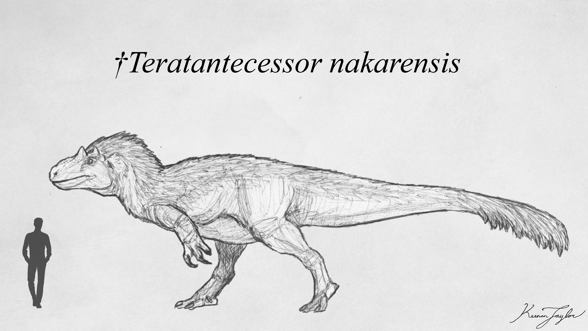
Among the important animals associated with this expansion was Teratantecessor, the monstrous wanderer, generally regarded as an ancestor of the zentaur and uktan lineages. Around eight million years ago, this theropod spread from Arvel into Ni'Khar and eventually reached Kairul. Its success was remarkable, although the precise reasons remain uncertain. Its relatively lightweight but robust construction may have provided considerable agility and endurance, allowing it to outperform many competing predators. Its origins in a cooler region may also have given it an advantage during the climatic transition.
The spread of robust monarchs into Ni'Khar marked a turning point for the Styraconychidae. The latter had previously occupied a wide variety of predatory niches across Arvel and Ni'Khar, including those of mesopredators, terrestrial pursuit hunters, and large apex predators. However, their populations were increasingly challenged by the new arrivals.
The Styraconychidae had become comparatively specialized within the ecosystems they occupied. As forests opened and new competitors spread southward, many terrestrial species struggled to maintain their former dominance. The more arid southern and western regions of Arvel remained favorable to them, and the Ni'Khari prairies protected by the Silverback Mountains may also have provided a refuge. Nevertheless, the arrival of robust monarchs from the north proved difficult to withstand.
The Anchored Period
By the beginning of the Anchored Period, robust monarchs had become some of the dominant predators in the Known World. Their success was closely tied to the ecological changes initiated by the earlier interchanges and the Great Drying. The expansion of open habitats, the arrival of new herbivores, and the decline of many established predators created conditions in which apeirovenatorids could flourish.
The Styraconychidae did not disappear, but their former diversity and dominance gradually diminished. The terrestrial members of the family retained populations in southern and western Arvel, where drier conditions continued to favor them. Their former presence in Ni'Khar became increasingly restricted as robust monarchs expanded into the continent.
A further challenge came from the more derived Megaraptoridae. In northern Ni'Khar, these animals had remained subordinate beneath the dominant noasaurids during the Warring Clades Period. However, climatic and ecological changes weakened the established predatory guild, allowing the megaraptorids to expand into newly available niches.
Their descendants developed into the endemic subfamily Dromaeodrakoninae, which includes the genera Dromaeodrakon and Hippodrakon. These animals were distinct from the agnostornian radiation, despite their shared megaraptoran ancestry. They were particularly successful in Kairul and eventually returned to the Known World, where they competed with the resident agnostornians.
The genus Hippodrakon became especially important in Ni'Khar. Its members were social and coordinated hunters, a strategy that may have given them an advantage over the more solitary styraconychids. During the Anchored Period, large hippodrakons became among the most common apex predators in the region. Their success was so pronounced that the largest surviving styraconychids were comparatively rare, apparently outnumbered by roughly ten to one.

One of the most significant species was Hippodrakon laelaps. Fossil bone beds containing adults of both sexes alongside juveniles suggest that these animals lived in complex social groups, although probably smaller ones than those of their modern relative, the taro. They were dedicated hunters of the large sloths, gomphotheres, and dinosaurs that inhabited the open landscapes of the period.
Despite the ecological turnover that accompanied the Pleistocene harvests, H. laelaps persisted as the dominant apex predator of its region. Its eventual disappearance, however, would be brought about by another major transformation of Kaimere's grasslands.
The Houze Prairie Turnover
Between approximately 500,000 and 300,000 years ago, houze grass arrived from Kairul and began spreading through the arid territories of the Known World. This grass, commonly associated with the houze prairies, was highly competitive. It grew rapidly, produced relatively low-nutrient foliage, and spread fire as a means of clearing space for its seeds. Although its seeds were resistant to burning, they were not entirely immune.
The expansion of houze grass transformed the native grasslands. Many established plants were displaced, and numerous herbivores that depended on the former vegetation went extinct or declined substantially. The large gomphotheres, last of the grassland sloths, and several enormous thescelosaurs were replaced by huge camels and elasmarians as the most abundant multi-ton herbivores.
This transition had severe consequences for Hippodrakon laelaps. Its principal prey base had been substantially reduced, and the new herbivore communities favored predators capable of sustained pursuit over long distances.

The uktan, an apeirovenatorid robust monarch, was particularly well suited to these conditions. Having evolved alongside houze grass, it was more familiar with the altered landscape and better able to avoid the worst consequences of its spread. It was also an exceptionally enduring predator, capable of hunting the large herbivores that had become dominant in the new grasslands.
The combination of habitat transformation, prey loss, and competition from the uktan appears to have caused the rapid decline of H. laelaps. The precise mechanisms remain uncertain, and direct competitive displacement may not have been the only factor. Nevertheless, the giant hippodrakon was eventually replaced as the region's dominant apex predator by the robust monarch.
Its smaller relative, the taro, survived. Taro had lived alongside H. laelaps throughout the Anchored Period but remained comparatively small. Its generalist habits and greater adaptability likely protected it from the environmental changes that eliminated its giant cousin.
There is also a possibility that another species of Hippodrakon arrived from Kairul and integrated with the surviving taro populations during this period. Such an introduction might explain the considerable variation in coloration and body size seen among modern taro. Some researchers have also suggested that smaller H. laelaps may have contributed to their ancestry. The giant species showed a decline in size toward the end of its existence, potentially reflecting hybridization under ecological stress or nutritional deficiencies. If this interpretation is correct, traces of the former prairie kings may survive within the modern taro population.
Modern Radiation
The evolutionary history of Kaimere's megaraptorans has produced several distinct lineages, although their relative success has changed considerably through time.
The Styraconychidae, once among the most diverse terrestrial predators of the Known World, have experienced a substantial reduction in their terrestrial representation. Their modern terrestrial members are primarily represented by two known species: the darun, which inhabits the Arvelith Highlands and lowland jungles, and the western megalosaur of western Arvel. These animals represent the surviving terrestrial branch of a once much broader radiation.
The family's greatest modern success belongs instead to its fish-specialized members, the Teratociconinae. This group had already begun diversifying by the later part of the Anchored Period, with one major lineage remaining in Arvel and another spreading north into Ni'Khar. The ba'khar, a lightly built giant, is the only confirmed surviving member of its particular lineage, although the northern Ni'Khari alar may also belong to it. The name-bearing genus Teratociconia contains a temperate species found throughout the Khalin Sea and along the southern coast of Arvel. It is considered the principal predator of Roostercrest Island because of its ability to travel on land, although its diet is primarily composed of fish rather than terrestrial animals. The genus Alar has experienced an especially remarkable expansion. During the Anchored Period, its members were comparatively modest predators, generally weighing around half a ton and occupying riverine and coastal habitats. Approximately 1.5 million years ago, however, the genus underwent a major expansion in both geographical range and species diversity. The reasons for this sudden success remain uncertain, although ecological opportunity is considered the most likely explanation. Modern Alar species are generally still relatively small for megaraptorans, with most weighing around one ton and the largest averaging approximately two tons. They are now distributed throughout the Known World and beyond, including northern Ni'Khar and western Kairul.
The Apeirovenatoridae have followed a different course. Their robust construction, intelligence, and multigenerational family organization have allowed them to retain a dominant position in many terrestrial ecosystems. The uktan is among the clearest examples of their success, having replaced the giant Hippodrakon laelaps as the principal predator of the houze prairies. Meanwhile the zentaur and kurajaku, which is descened from the Arvelith apeirovenatorids, are now the largest living terrestrial and aquatic theropods on Kaimere respectively.
The more Earth-derived Megaraptoridae have also retained an important presence beyond the Known World. Their descendants, particularly the Dromaeodrakoninae, developed into a distinctive endemic lineage. Although only a limited number of species occupy the modern Known World, the family has achieved considerably greater success in Kairul.
Together, these radiations demonstrate the remarkable evolutionary flexibility of the megaraptorans. Their ancestors began as relatively small predators, living beneath much larger theropods during the Mesozoic dynasties. The Dynastic Extinction provided the first major opportunity for their diversification, while subsequent climatic changes, continental interchanges, and ecological turnovers repeatedly altered their fortunes. Some lineages became dominant terrestrial predators, others specialized in aquatic environments, and still others persisted as comparatively small generalists.
03 · SPECIES ACCOUNTS
Known Diversity
The following accounts document representative felids recorded in the encyclopedia. Select a species to consult its individual natural history and descriptive account.
Taro

Hippodrakon uktaro
The taro or uktaro, is a common and successful vassal predator on the houze prairie. H. uktaro had lived alongside H. laelaps all through the Anchored Period. They remained small. Though their giant cousins perished, the taro persisted, no doubt aided by their much greater adaptability. Small generalists often fare better in times of turmoil. Taro are the most social of Kaimeran megaraptorans. Especially near precious water sources, packs of as many as 7 related adult females and a few mates (usually brothers or cousins) and their offspring can be found defending a territory and hunting local game. Usually they live in a large group and hunt alone or in pairs, but in the most desperate months of the dry season, they will work together to take down very large game. Unlike the agnotorns, which have smooth gripping teeth they use to grapple and claws employed in precision strikes, the taro instead have serrated teeth as a more primary weapon and their large arms with powerful claws are more of a supplement, buffeting prey that they bite to worsen the attack.
Read species article →Darun
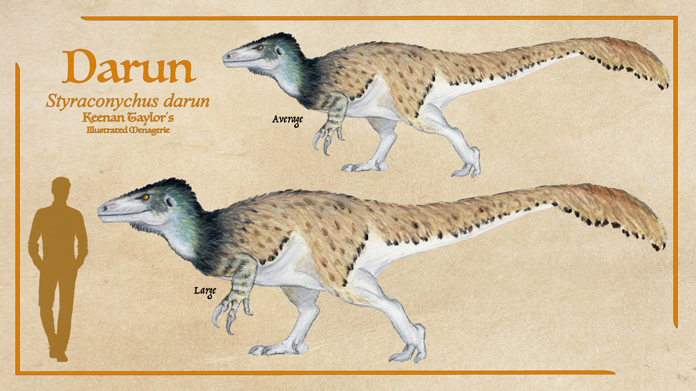
Styraconychus darun
While young zentaur, black cockatrice, and firebacks do occasionally venture into the central highlands, the darun is generally considered the apex predator of the mountain forests of Arvel. They grow between 4.5 to 6 meters and can weight between 600 — 1,100 kilograms. These megaraptorans are a relic of the rulers before the subfamily of Styraconychids who now preside over most of Kaimere. Their low-slung and more narrow bodies are better at navigating the subtropical jungles and bamboo forests which are dense in part due to the uneven terrain being uninviting to the titans who define the lowland forests. They are generalist ambush predators that hunts a wide range of animals, from as small as lizards and rodents to as large as Gigantopithecus and highland chalicotheres. As they have not been regularly encountered by people on speaking terms with the naturalists of the Great Library of Bolonadoi, little is known of their habits, but they seem to be solitary.
Read species article →Western Carnosaur
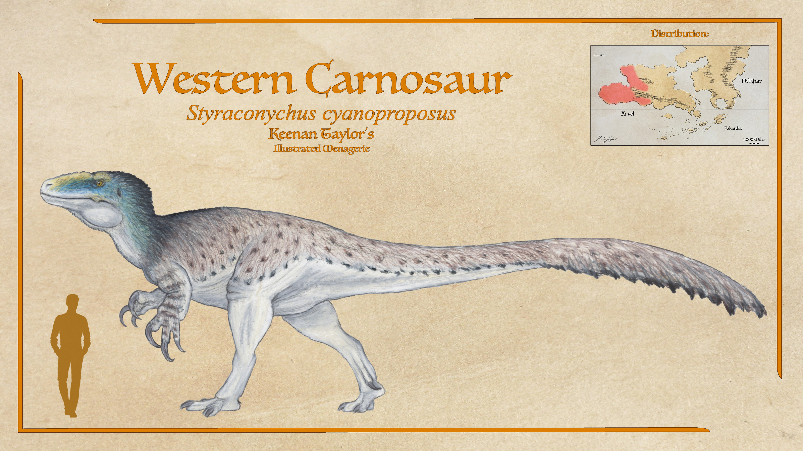
Styraconychus cyanoproposus
The western carnosaur, blue-masked carnosaur, or timugai megalosaur, is the top predator of the forest and its surrounding desert of the Timugai Badlands. These megaraptorans aren't common, but measuring up to thirty feet long and weighing around two tons, they are the undisputable kings of the realm. Like other megaraoptorans, they grab prey using their jaws and kill it with stabs of their claws. When killing prey small enough to carry, they will usually simply grab and stab, letting the struggling, impaled prey kill itself with the very efforts it uses to escape only dealing further organ damage. Thick, elastic skin on their chest and neck allows them to ignore any retaliating strikes from prey in their arms, and since their arms are much closer to their center of balance and are very strong, they can carry a substantial load without being encumbered and still able to keep vigilant and even fight if they must.
Read species article →Yotenstork
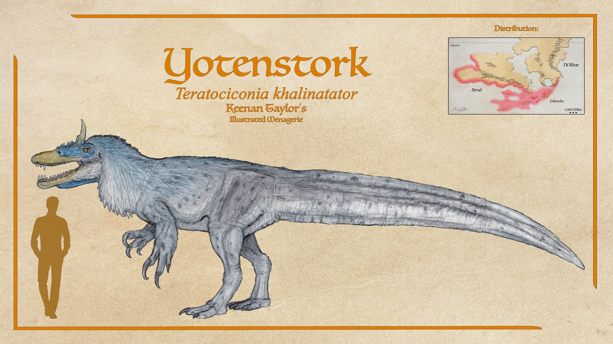
Teratociconinia khalinatator
Teratociconia or the yotenstork, the southern cousin of alar, is present but according to Wind-Kisser only goes inland around rivers. They are larger than the qotsgrak, and occasionally pursue big terrestrial prey, but usually they're more interested in fish throughout the rivers, lakes, and lowland swamps. This is consistent with how this species is described on many Khalin islands, including Agathognosis. As yotenstork travel freely through the Khalin islands, there doesn't appear to be anything particularly special about this population, though the island does seem to have a large number of residents in its many lowland waterways. In fact, their range extends as far west as the Crescent southeastern jungle, and as far west as the Bay of Timugai.
Read species article →Trakaiam Alar
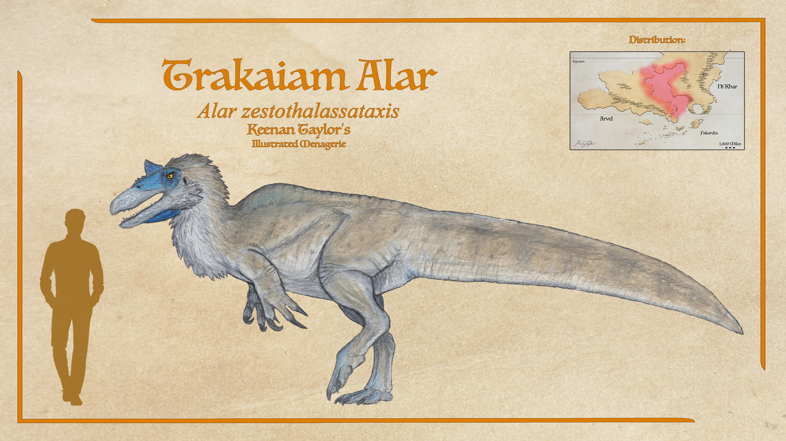
Alar zestothalassataxis
The Trakaiam alar, a styrachonychid megaraptoran, is the most abundant species in the genus Alar in the Known World. They are a marine species though tend to hunt from shore. Their coloration affords camouflage on sandy beaches, and fish in the shallows before them look up to see them blend into the white clouds and blue sky. They mostly seek out fish in water shallow enough to wade in, which is quite abundant around the scattered shifting islands throughout the inland sea, though they are also proficient swimmers and will dive for fish and crustaceans in reefs and meadows, and of course will scavenge or kill beached marine game. Most other species of Alar are freshwater hunters, and only the Khalin alar shares their maritime inclinations. By metrics of population and species diversity, Alar is by far the most successful of Kaimere's megaraptorans.
Read species article →Seridic Alar
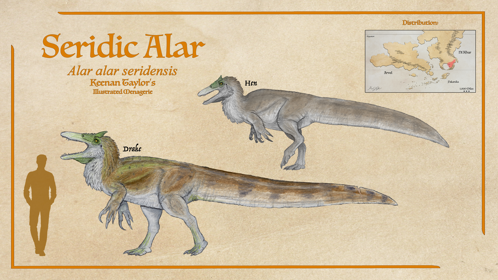
Alar alar seridensis
In the lush and bountiful Seridic wetlands is, perhaps surprisingly, the smallest subspecies of Crescent alar: the Seridic alar. Males are often close to a ton and a half in weight when fully mature. However, this subspecies demonstrates the greatest dimorphism of any alar species, with females averaging a full meter shorter and rarely reaching one ton. This size is thought to be a direct consequence of living alongside the last yet very much successful ba'khar. Like other alar, the Seridic alar is a much denser animal than the ba'khar, though not so dense as the kurajaku. They have solid bones, thick skin, and somewhat atrophied air sacs. True to their generalist ecology, they aren't dedicated to fishing in shallows like ba'khar or in the water like kurajaku. They split the difference, being proficient in both. They are better swimmers than both, so can chase fish in more open water, but they do hunt in shallows by preference when possible.
Read species article →Ba'Khar

Ardeanax bakar
The ba'khar are the largest of the styraconychid megaraptors, though the 'western megalosaur' of Arvel is not far behind in their largest specimens. Though the alar and kurajaku are recent arrivals to the Seridic wetlands, the ba'khar has been in this habitat at least through the Anchored Period. There are two lineages of teratociconinae, or the monstrous storks, that diverged between 6 and 10 million years ago. The alar belongs to the lineage that remained in Arvel until their radiation 1.5 million years ago, while the ba'khar's clade came to Ni'Khar sometime after the divergence. Though they were once very diverse and successful, the ba'khar is the last member of this clade in the Known World. Their relatives all were outcompeted by alar in the faunal turnover 1.5 million years ago. Only the Seridic wetlands was their refuge, likely because it retained sufficient fish stock through the turnover to continue supporting these larger predators. Ba'khar are fish specialists as a species, though they are quite capable of taking a wide range of prey, from turtles and birds to mammals, reptiles, and other dinosaurs. Crocodilians are quite commonly taken, second only to fish as their species preference.
Read species article →Kurajaku
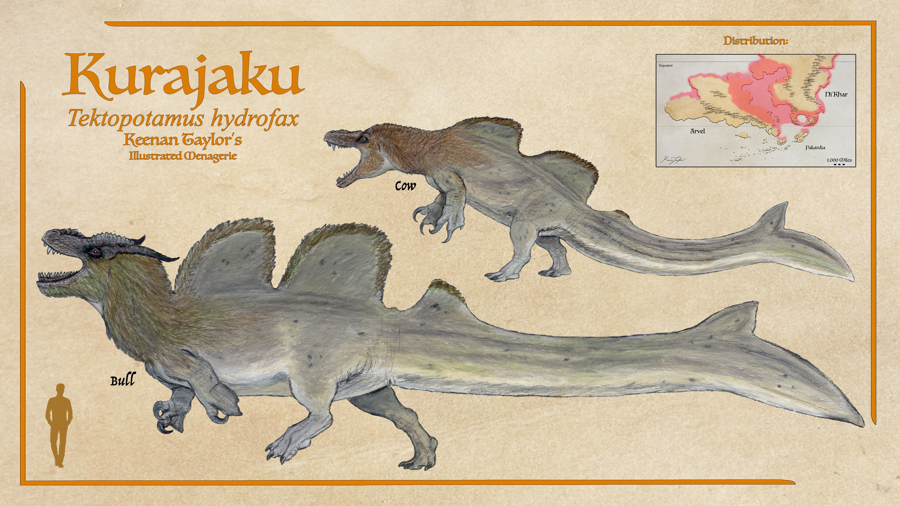
Tectopotamus hydrofax
With an average length of 17 — 19 meters and a weight of 20 — 28 tons, and few extreme specimens exceeding 25 meters and 65 tons, the kurajaku bull is the largest theropod to ever evolve on Earth or Kaimere, and by a staggering margin. This size is only possible thanks to the abundance of large prey animals in shallow waters, such as seagrass meadows and deep lakes. Female kurajaku lack this extreme size as they must still nest on land. Therefore, they are capped at the conventional terrestrial theropod upper range of 12 — 14 meters and 9 — 14 tons. They are much more cumbersome on land at this mass than other theropods, but really they just need to be able to guard their nest. Kurajaku come into their own once they have sunk and reach the bottom. Like a hippopotamus, they run along the bottom of rivers and seaways with surprising proficiency. A staggering breadth of muscles connect their short legs to a large fluked tail, with the leg both launching forward through the water, and the flexing of the tail when the leg kicks back drawing the tail in the same direction. The tall keels on their backs keep them stable as they run. This efficient system powers them ahead at speeds that exceed their terrestrial cousins. When they need a bit of extra speed or a quick turn, strong arms with webbing between the second and third digit are readily employed.
Read species article →Kairulan Kurajaku
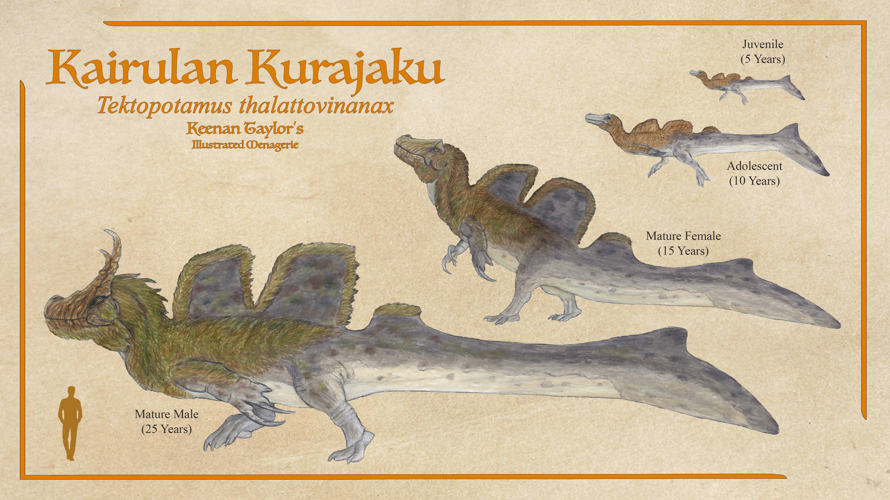
Tectopotamus thalattanax
Though the kurajaku evolved in the Known World, their greatest abundance is actually in Kairul, where a vast network of kurajaku dug channels connects numerous slow rivers in what basically adds up to a habitat like the everglades spanning half the territory of the United States. These everglades are found along the west coast of the western peninsula of the continent. Though a more mottled color morph is more common in the Known World, and this coloration more abundant in Kairul, there is so much interchange thanks to males traveling back and forth between the regions that they are not considered distinct species.
Read species article →Zentaur
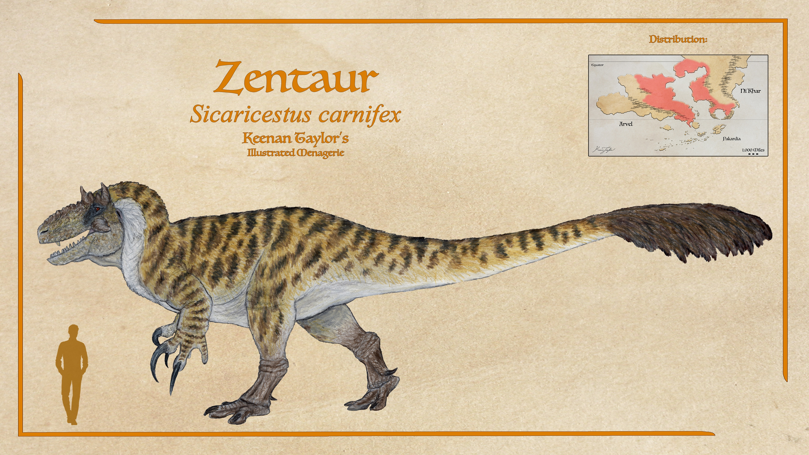
Sicaricestus carnifex
Sicaricestus carnifex: the hook-handed butcher. It has many names in many kaimeran languages, but in Amenetran or the common tongue, it is called the zentaur. The zentaur is the apex predator in the forests of Arvel and Ni'Khar. They have the highest concentrations within the forests of the eastern face of the Arvelith highlands, and the Ni'Khari forests facing the Trakaiam sea. These are low-slung, heavyweight assassins that specialize in large game as adults. When taking prey, they capture and restrain in powerful jaws, then claws up to a meter long are thrust into the windpipe or between ribs. Compared to uktan, which are hollow-boned more long-legged, open-prairie pursuit predators, the average zentaur weighs 2 tons more despite comparable length are the typically more low slung. While the uktan usually takes ungulate prey between 500 pounds and 2 tons, the zentaur routinely targets prey in its own size range, like hukolgur ground sloths, giant thescelosaurs, drenduga in Arvel, and subadult titanosaurs on both continents, though they will hunt smaller game when the need arises. Zentaur, like uktan, are equipped to tackle a variety of prey, however in most cases individuals will develop strong preferences to certain game.
Read species article →Oritaku
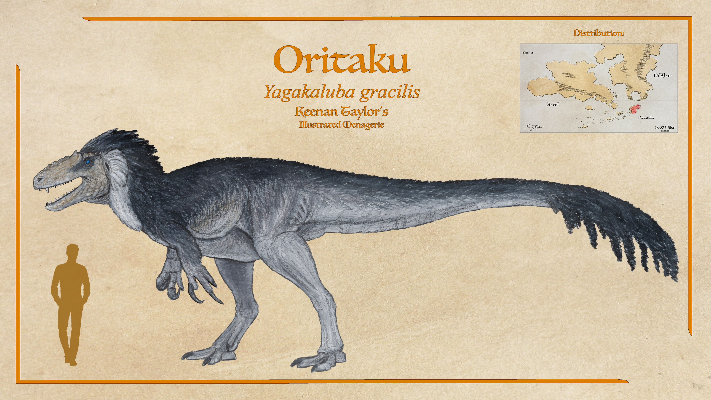
Yagakaluba gracilis
The oritaku is Pakardia's apex predator. While it was once believed this represented the most basal of the apeirovenatorid megaraptorans, it is now believed their light build and long limbs are a consequence of neoteny: they do not grow into the robust adult morph of the related zentaur and uktan. Therefore, by some metric they are Kaimere's most derived megaraptoran instead of the ancestral morph as it was once believed. This was likely due to the comparatively small size of Pakardia and eventually what began as a consequence of malnourishment instead became an adaptation. There are legends of giant oritaku in the highlands that some have theorized might be individuals that manage to get enough food in their formative years that they do gain the robust morph, but this rumor is yet unsubstantiated by the Assembly. They reach adulthood younger, indeed between 12 and 14. Males probably don't reach dominant size until around 16 — 18, but they're still a whole hell of a lot smaller than mainland kin.
Read species article →Uktan
Thanatobates uktan
Meaning 'king of the prairie' in the language of the Dolani nomads, the uktan lives up to its name. Because of extended parental care, young uktan do not occupy the top mesopredator niche that young of other megaraptorans do, which is why the small and mid sized predators of the houze prairie are so much more diverse than other terrestrial ecosystems. Uktan are the apex predator of the open grasslands of Ni'Khar and Kairul. These enormous theropods are specialized cursorial predators. The torso is nearly as wide as it is tall, yet despite giving them a robust appearance, air sacs spreading from the lungs make them extremely lightweight and afford highly sophisticated respiration. Though related to the zentaur and in many ways resemble T. rex, these wanderers are as much as 2 tons lighter than a zentaur or rex of similar dimensions due to the extreme pneumaticity of their torsos and entire skeletons. They are without equal in terms of overland travel efficiency and endurance, able to maintain a steady jog for hours if they must in pursuit of prey.
Read species article →Chaku Ka Bawe
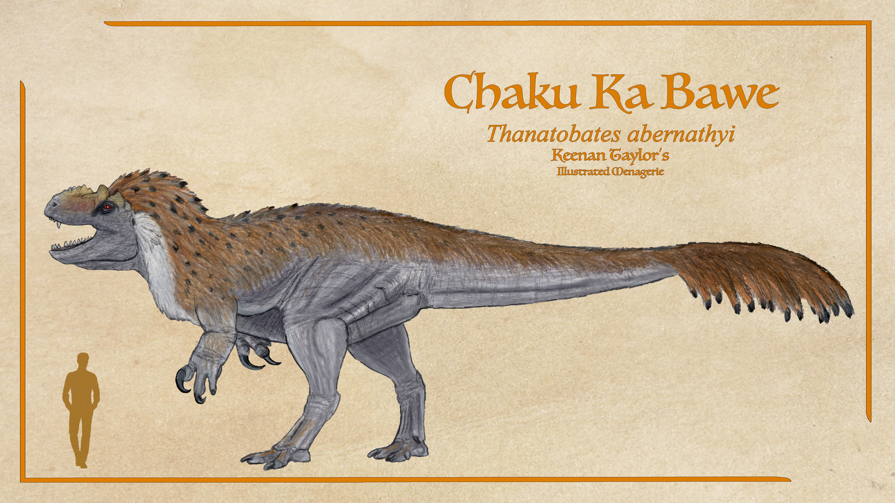
Thanatobates abernathyi
The chaku ka bawe is a species of uktan found in the western peninsula of Kairul. They are often considered the apex predators of their range. Like other uktan species, adults form mated pair bonds and defend the best hunting ranges. Anatomically they are generalist hunters, taking around two decades to reach adulthood, and like other robust monarchs, become individually specialized in taking down local large game. Numerous species of entelodont are on their menu, and while bokodu are rivals and sometimes even kill them, far more often even adult boars are prey to these mighty megaraptorans. Though around the same length as zentaur and often taller, they are significantly lighter at parity so the zentaur is still usually considered the largest land predator in Kaimere.
Read species article →Reliquary Uktan
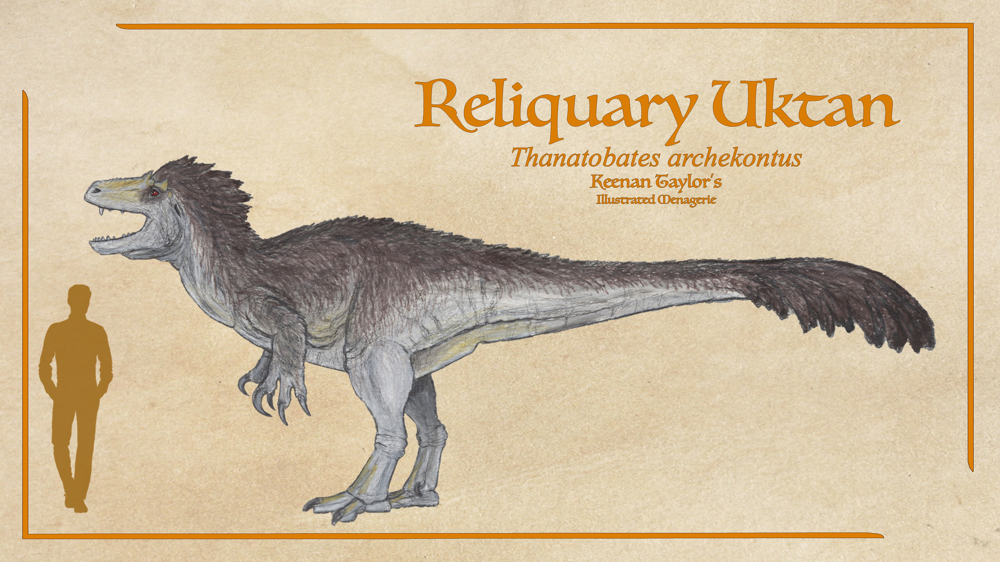
Thanatobates archekontus
The reliquary uktan is the most recently-discovered species of megaraptoran. They are small, perhaps reflecting an adaptation to the extreme heat and deficient conditions that were demanded of their ancestors crossing the Deadlands. It is believed they crossed the deadlines with the skyneck Jagganath under an unknown condition of easier passage and are now isolated. Though meager, they are a testament to this lineage's resilience. However, even with abundant large game on this stretch of the continent, they were unable to supplant the native apex predators as they did in the rest of Kairul, instead deferring as a vassal to the great grey serraden.
Read species article →04 · CLASSIFICATION
Taxonomic Notes
Megaraptorans are a lineage of theropod dinosaurs whose ancestry and phylogenetic placement remain subjects of considerable debate. Historically, they were often regarded as carnosaurs, but more recent published evidence has increasingly supported their placement among the Coelurosauria, either within or closely affiliated with Tyrannosauroidea. Nevertheless, the fragmentary nature of the fossil record on both Earth and Kaimere has made their evolutionary relationships difficult to resolve. Their precise position within Theropoda remains uncertain, and some taxa traditionally assigned to Megaraptora may instead represent closely related sister lineages or basal tyrannosauroids.
On Kaimere, megaraptorans are represented by two distinct evolutionary radiations. The first comprises descendants of more derived members of the Earth family Megaraptoridae, introduced during the Mesozoic Harvests. The second is a Kaimerean radiation descended from more basal megaraptoran-like ancestors, encompassing the clades Styraconychidae and Apeirovenatoridae. These latter families are united within the informal or higher-level clade Agnostornia, meaning "wonderous birds."
The relationship between these two radiations remains incompletely understood. Although the Kaimeran Agnostornia are generally considered descendants of basal megaraptorans, their precise placement within the wider group is uncertain. Some researchers have questioned whether they belong to Megaraptora proper, while others consider them a distinct but closely related lineage within basal Tyrannosauroidea. Most current studies nevertheless retain them within the megaraptoran radiation.
The Earth-derived Megaraptoridae of Kaimere eventually gave rise to the endemic subfamily Dromaeodrakoninae, comprising the genera Dromaeodrakon and Hippodrakon. These animals developed into some of the most influential predators of the modern Known World, although their evolutionary history differs substantially from that of the native Agnostornia.
The name Agnostornia refers to the clade containing the slender, predominantly slender Styraconychidae and the robust Apeirovenatoridae. The latter are commonly called the robust monarchs, while the former are sometimes described as the slender barons. These informal names reflect their contrasting body plans and their respective evolutionary histories.